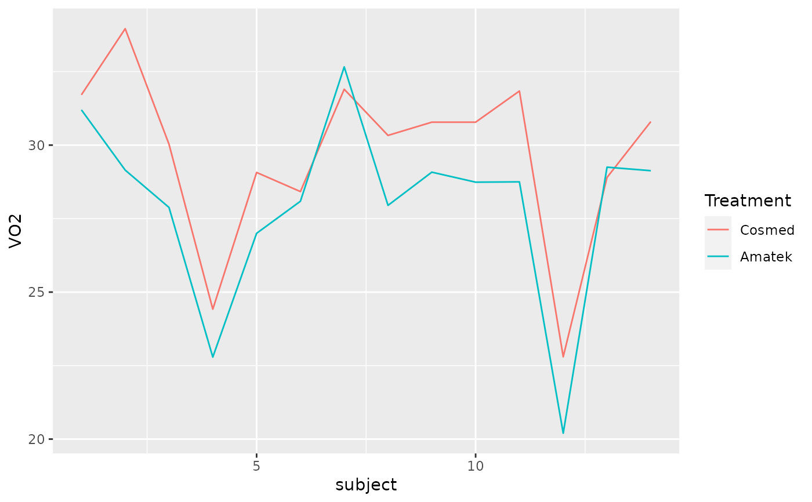

The Cosmed is a portable metabolic system. A study at Appalachian State University compared the metabolic values obtained from the Cosmed to those of a reference unit (Amatek) over a range of workloads from easy to maximal to test the validity and reliability of the Cosmed. A small portion of the results for maximal oxygen consumption (VO2 in ml/kg/min) measurements taken at a 150 watt workload are stored in COSAMA.
COSAMA
A data frame with 14 observations on the following 3 variables:
cosmed (measured VO2 with Cosmed)
amatek (measured VO2 with Amatek)
Ugarte, M. D., Militino, A. F., and Arnholt, A. T. 2015. Probability and Statistics with R, Second Edition. Chapman & Hall / CRC.
# ggplot2 approach ggplot(data = COSAMA, aes(factor(1), y = cosmed - amatek)) + geom_boxplot() + labs(x = "")# Line Plots: First change data format from wide to long with melt() from reshape2 # library(reshape2) # CA <- melt(COSAMA, id.vars = "subject", variable.name = "treatment", # value.count = "VO2") # ggplot(data = CA, aes(x = subject, y = value, color = treatment)) + geom_line() # rm(CA) # Convert to long format with reshape() CA <- reshape(COSAMA, varying = c("cosmed", "amatek"), v.names = "VO2", timevar = "treatment", idvar = "subject", direction = "long") ggplot(data = CA, aes(x = subject, y = VO2, color = factor(treatment))) + geom_line() + labs(color = "Treatment") + scale_color_discrete(labels = c("Cosmed", "Amatek"))